Before we begin, let me say that you should try your best to spend at least a couple days in Yosemite National Park in California. And not because is so large that you need a lot of time to visit all the best places, but because one of the highlights of this park are the amazing sunsets and sunrises. So if you don't arrive before sunrise, or leave after sunset, you are missing the best light that can paint those gorgeous mountains.
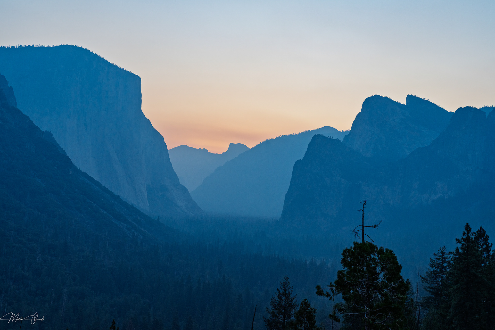
A bit of history
Back in the early 80s, my friend Carlos and I shared the love for photography, especially Landscape. And he owned several books from Ansel Adams and Galen Rowell, two of the main artists creating the most breathtaking views of the National Parks, especially in California.
Ansel took a more “traditional” approach, using black and white and a view camera. He used to shoot from the roof his car.
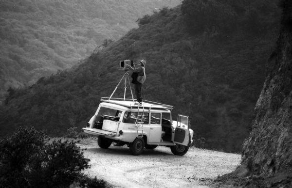
His images are amazing and his technique was a combination of capture and lab work that no photographer I know have ever mastered. He even invented his own exposure technique, the famous Zone System, still used today.
In the next image, I tried to humbly mimic the Ansel Adams look.
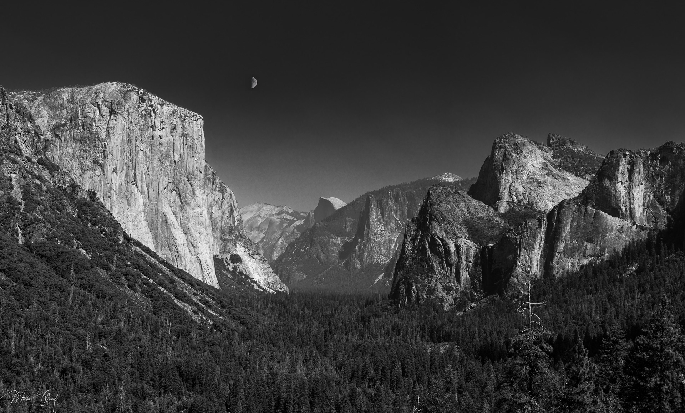
Galen Rowell, a more recent photographer than Adams, and far more intrepid, lived pretty close to the park, on a town reachable via the Tioga Roda, the same that takes you to Tuolumne Meadows. He used to shoot Yosemite quite frequently, along with many other parks and places all around the world. Sadly died way too early, killed with his wife on a plane crash.
I always quote him as a signature for my forum profiles: "One of the biggest mistakes a photographer can make is to look at the real world and cling to the vain hope that next time his film will somehow bear a closer resemblance to it"
He was a master of Alpenglow, which is the warm orange color that can be seen on the top of the mountains at early morning or late afternoon. It was coined in reference of the Swiss Alps. So when I saw the scene in the next picture, I got tears in my eyes and though: “Oh my God… My first alpenglow”.
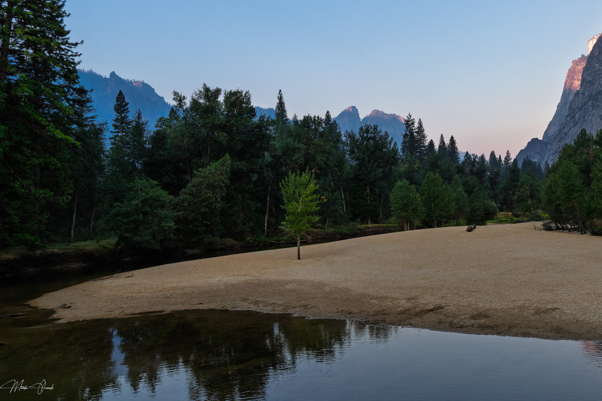
Galen Rowel also mastered layering in Landscape Photography, and this image reminded me of that with Merced River on the foreground, the trees in the middle, and El Capitan in all its glory as the Background.
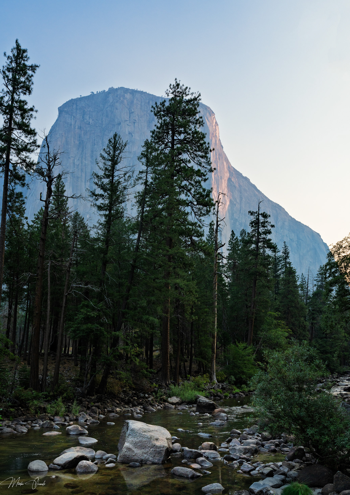
The Plan
If anyone asks me one single bit of advise of visiting Yosemite is: Take your time. I didn't follow my own advice and I rushed through everything. I should have stopped, get out of the car, and spend a good amount of time setting up my tripod (which I didn't use), so I could come back with the best photos possible, but I was afraid the I wouldn't have enough time. And let me tell you, unless you want to hike every trail in the valley, you'll have enough time for the basics. So, keep it slow.
The initial plan was:
- Friday: LA to Motel 6 in Fresno
- Saturday Motel 6 to Tunnel View
- Yosemite Village
- Lower Yosemite Falls
- El Capitan Viewpoint
- Tuolumne Meadows (Quick stops at Olmsted Point and Tenaka Lake)
- Back to the Valley and last stop at Glaciar Point
- Back to Fresno
- Sunday: Back to LA
Timing wise I feared I would have not enough time to see everything, but at the end I decided to do the plan as originally laid out. That caused that I rushed through places I should have stayed and take time to enjoy the place and take as many photos as possible. Instead I shot everything very fast, and ended up having lots of spare time.
I drove over 900 miles, in 3 days. That is a LOT. I spent 22 hours behind the wheel, and I felt it every single day of the following week. Fortunately the car I rented was quite comfortable, a 2025 KIA Sportage with all the goodies, including cruise control and automatic high beam lights, which were quite useful driving up to Yosemite Valley in total darkness.
Friday September 5th 2025: Left Long Beach at 2:00 PM. Traffic leaving LA was brutal. Put some gas in Gorman and continued non-stop to Fresno
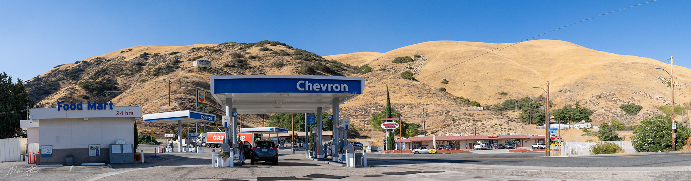
Arrived at Fresno at around 7:00 PM (5 hours driving time). Went to Whole Foods to get groceries, dinner for Friday and Breakfast and Lunch for Saturday. There are not many options to eat in Yosemite, so bringing your food is highly recommended, especially if you are going to be venturing away from the village.
I was very excited about Saturday so went to sleep at around 10:30PM.
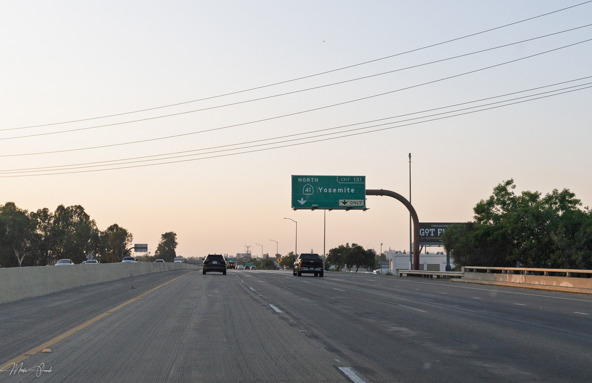
Saturday September 6th 2025: Woke up at 3:40 AM. Actually had the alarm set for 4AM, calculating to leave around 4:30 which will allow me to arrive at Tunnel View at around 6:30AM, well into the sunrise, but the excitement didn't let me sleep more.
Left the motel at Fresno at 4:10AM.
Made a stop at the Chukchansi Crossing Fuel Station, highly recommended. Filled up the tank and got a nice warm coffee, which I desperately needed.
The drive up the valley was overall quite good. It was pitch black, but my car had automated high beams, which really helped to keep my hands securely on the wheel. The road is in great shape all the way so it felt very safe.
Tunnel View
I knew that once you cross the tunnel, you'll be greeted with a breathtaking view of the Yosemite Valley with most of the important mountains and granite giants in one single scene. But you are never prepared to see something like this for the first time.

After spending a few minutes here, tearing out of excitement and awe, calling friends and family and sharing the breathtaking view I drove down the valley.
I couldn't avoid stopping from time to time to capture what I was seeing on the roadside, and quite frankly I should have spent much more time in every spot. Starting from a view of El Capitan from the Merced River creek -as seen before when I mentioned Galen Rowell- and this one from the Sentinel Bridge.
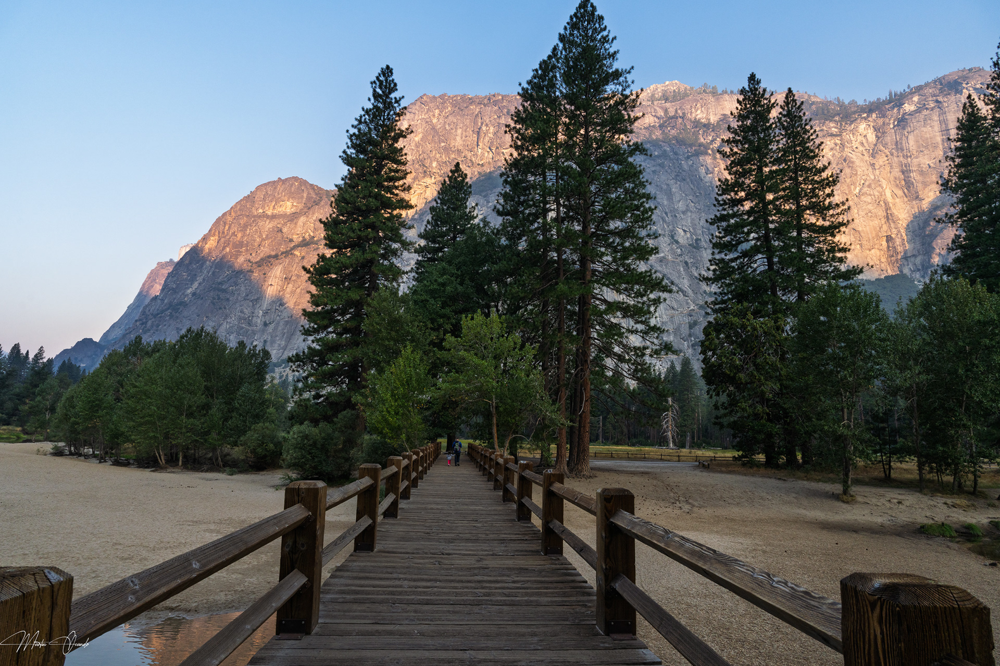
Yosemite Valley Village
At around 7:15 AM I reached the village, featuring the Visitor's Center, hoping to have more coffee and breakfast. The deli have good prices overall and the coffee is good. Had to wait a few minutes until the rest of the facilities opened at 7:30 AM and 8:00 AM, so having breakfast at that hour was perfect.
A dream came true
Carlos and I loved to browse Ansel Adams books, marveled at the vistas of Yosemite National Park. When we realized that there was a Gallery in the park we dreamed of one day visiting it. Imagine how I felt when I saw this.
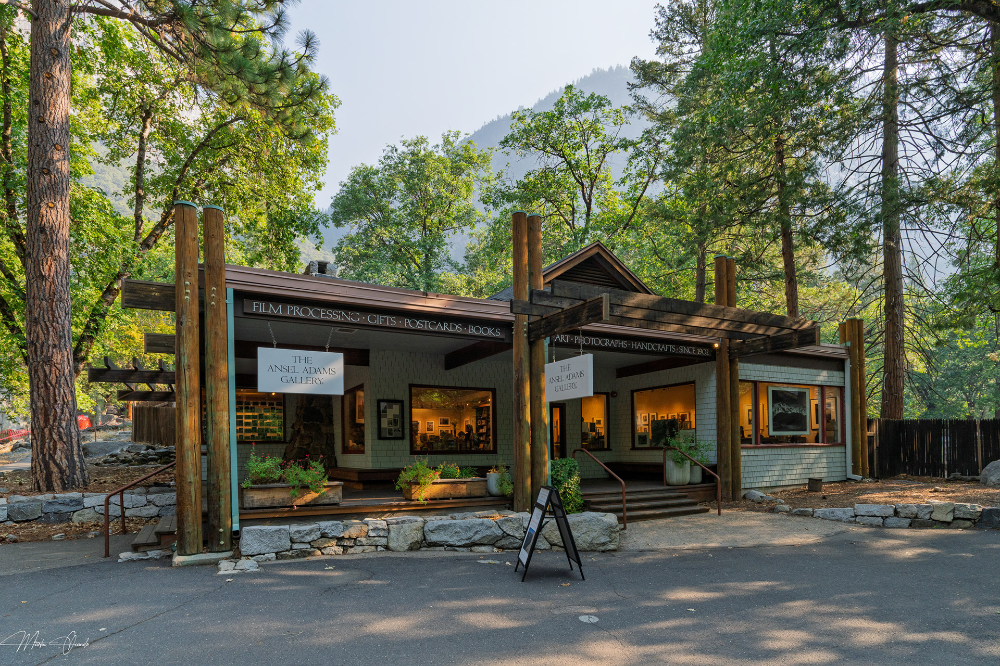
Inside you can find not only souvenirs, books, postcards, collectibles, and other small items, but on the walls you can see Ansel Adams originals, which are for sale as well. Not your regular wall photograph, that's for sure. I came back with a nice calendar and a hat.
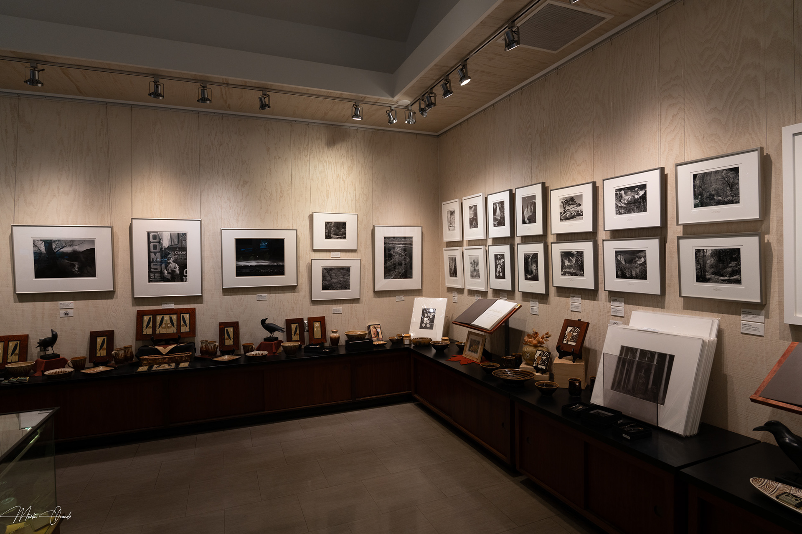
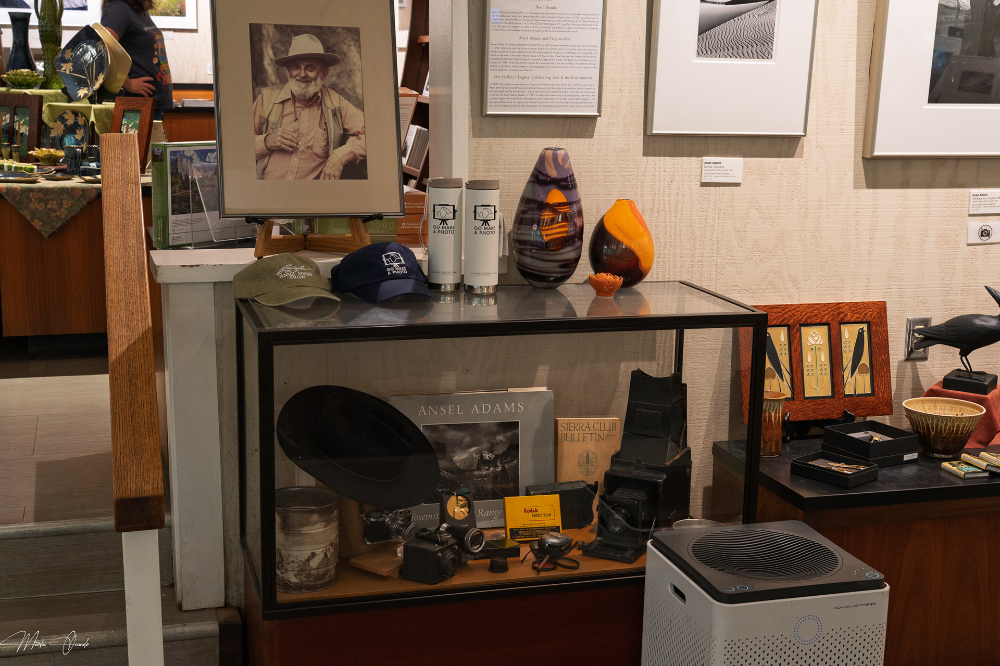
Moving forward
After breakfast the plan was to start moving along the valley but wanted to visit a couple stores and get some souvenirs to bring back home.
After a quick stop at the Visitors Center, in which I got a nice book for my wife, I went back to the parking area and started driving away from the village into the main valley. But I had to stop very quickly because of the views.
Lower Yosemite Falls
This is a fairly easy hike, although for me was a bit challenging being in such a bad shape. So this was a place I can easily take pictures from the main trail without going too deep into the falls, and I'll be more than content with the results. There is really not much to see on the lower falls, too many people around, and the upper falls hike is not for the faint of heart. Is a long 1.6 mile hike and a few hundred feet climb, so not for me. At least not in my current fitness level.
Still, I made it to the lower falls and went back. Not really much to see in the bridge that I haven't seen in any other fall.
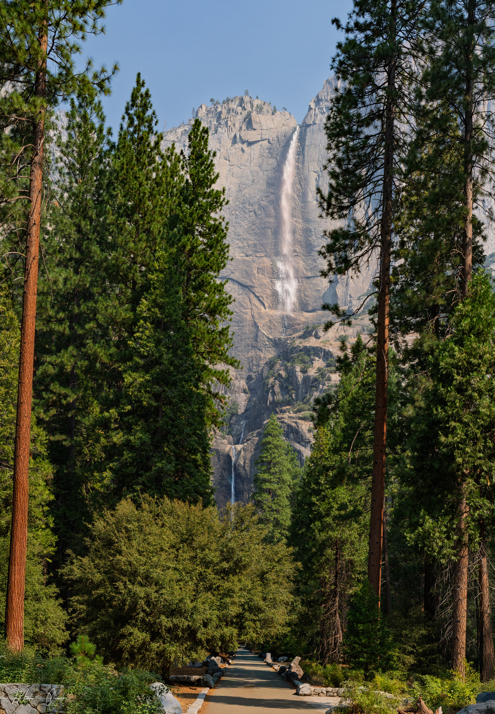
El Capitan Viewpoint and Picnic Area
This is one of those places that you don't want to leave. The view to El Capitan on one side of the road, and Cathedral Rock on the other is just overwhelming. My widest lens couldn't keep up with so huge mountains so I had to shoot vertical panoramas and stitch them together. Here are the results.
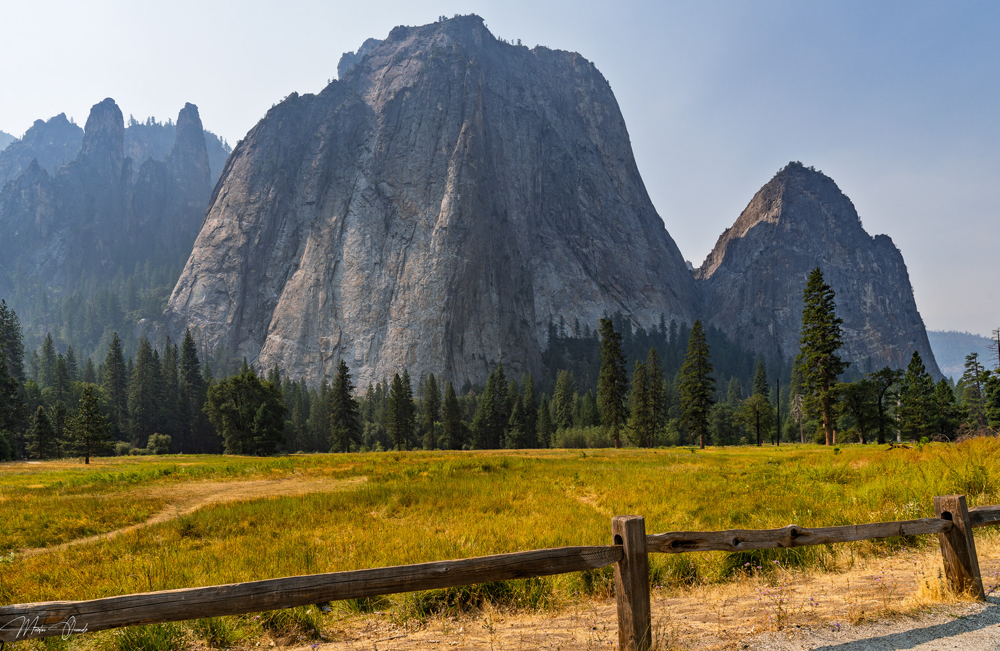
To have an idea of magnitude, my car is the silver SUV on the lower center-right on the next image. Still it is an exercise in futility trying to picture the magnitude of the mountains unless you are there in person.
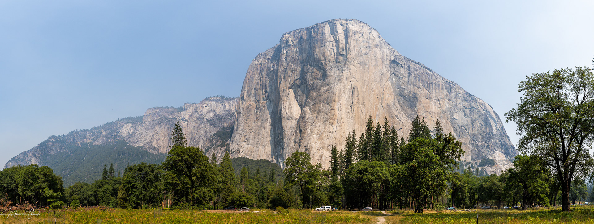
What next?
Initially I planned to go all the way to Tuolumne Meadows and back, but is a long way. 1.5 hours each way, so roughly a 3-hour trip from the Valley.
But is 11:45AM. So if I skip Tuolumne Meadows, my next stop will be Glaciar Point, and the back to Fresno. So I could be done by 1PM.
I'm not wasting all that time. Let's go to Tuolumne Meadows.
Tioga Road
Wildfires were mostly extinguished, but there was still a lot of smoke in the air. Especially for the areas surrounding Tioga Road. The first stop was Olmsted Point, and the next image has been heavily edited with the dehaze slider in Lightroom. It was almost unusable due to the thick smoke cover.
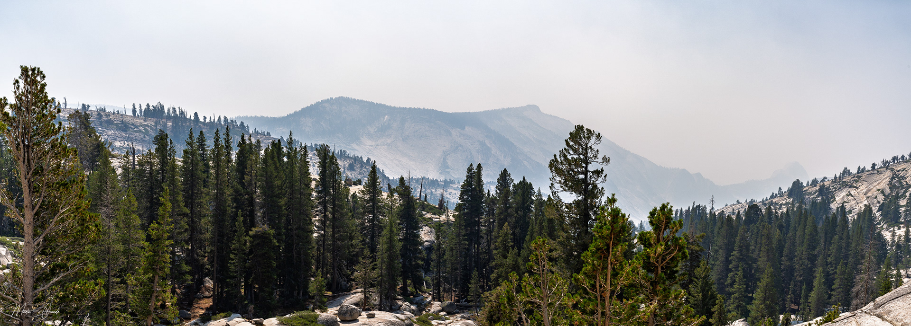
Tenaka Lake was considerably clearer and people were having a very nice time kayaking and swimming on the lake.
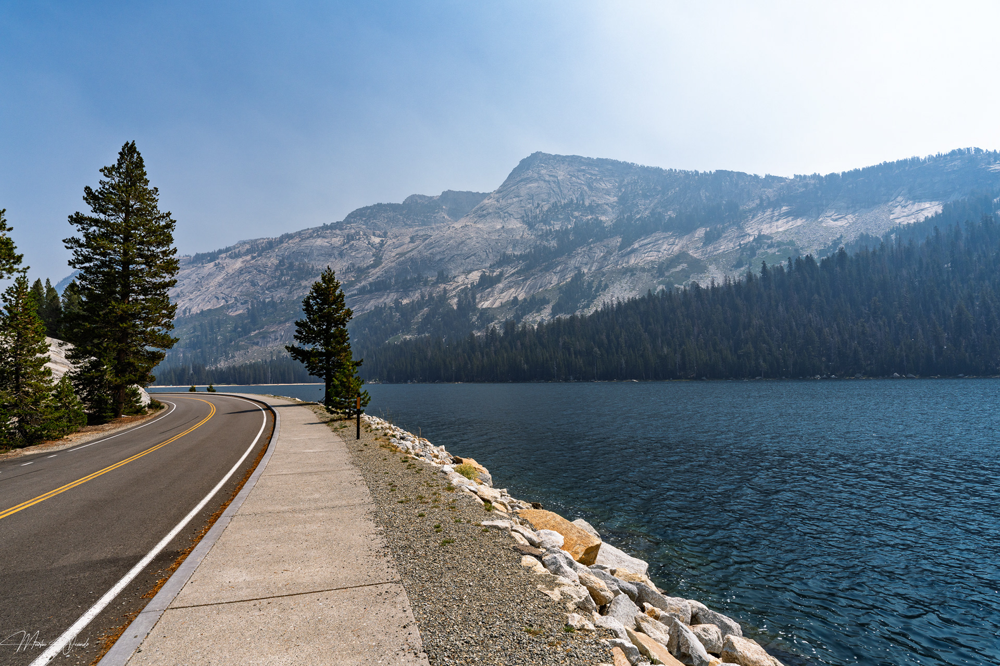
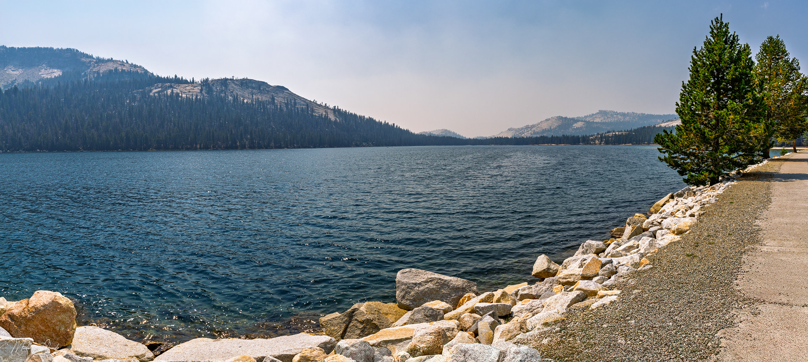
Tuolumne Meadows
I made a mistake on my trip to Tuolumne Meadows, but it was really not my fault as my initial plan was to skip it from this trip, so I failed to see that after the spot where I parked to take some vistas of the meadows, there is a visitors center, with a proper parking space, and there is a short and easy trail called Tuolumne Meadows Footbridge. But I never got there. I was more worried about the time it'll take me to drive back, than actually enjoying the place.
I simply saw a “Tuolumne Meadows” sign, and stopped at the first road side parking spot I could find.
I took a few images, but the weather was very smoky, so it was really hard to have a clear view.
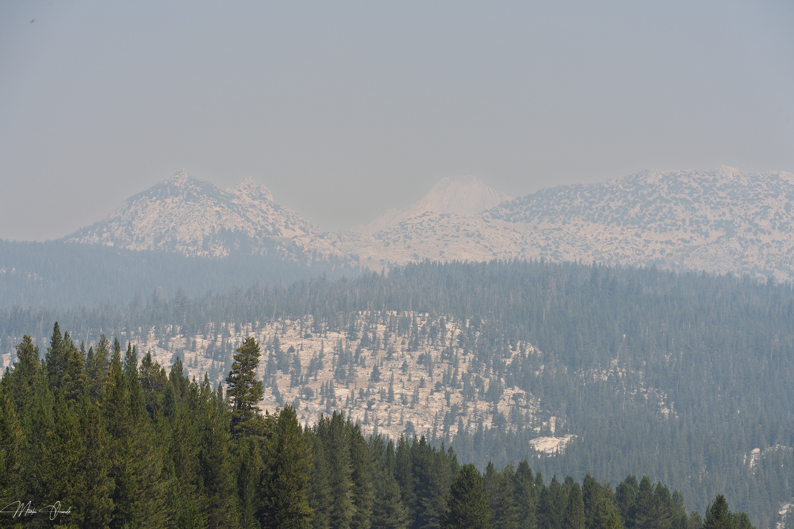
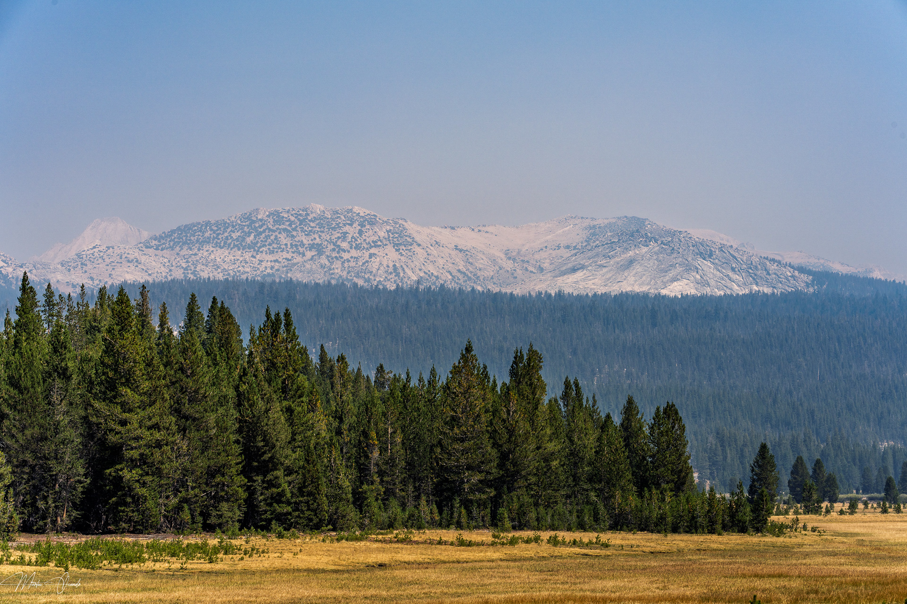
I saw no solution but to apply Ansel Adams Black and White style editing and try to bring some details back. I hope you like my version of Tuolumne Meadows.
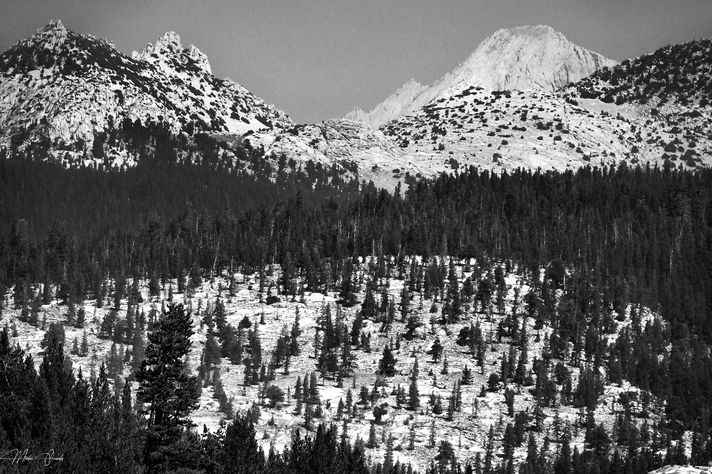
Driving back to the valley
After 1 hour and 30 minutes, I turned back to Yosemite Valley. Next stop was Glaciar Point, but I was going to pass through Tunnel View again, so it was logical to stop and see how it looks in early afternoon light.
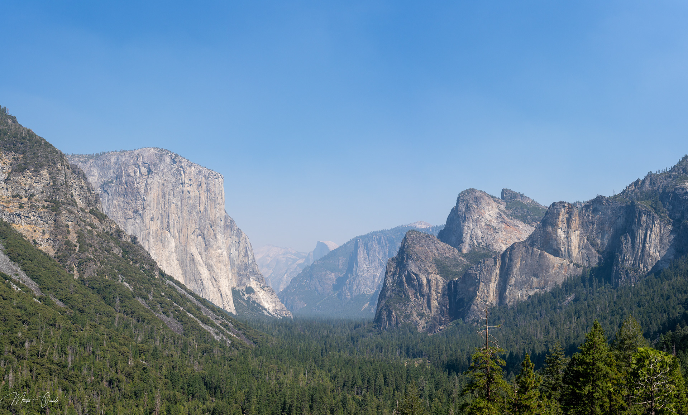
So, I made a pretty good time. I went to Tuolumne Meadows and back in less than 3 hours, but is time to our last spot and head back to my motel to have some well earned dinner, a couple of glasses of wine, and edit some of the photos so I can share with the family.
Glacier Point
I don't know if the left side of Half Dome is a Glacier, but it certainly looks like one, and I feel that is the reason why it got its name. The granite giant was once a full dome, but due to icing and maybe a seismic event it cracked and the left side fell down. This is just what I heard what could have happened and why it has such a unique shape.
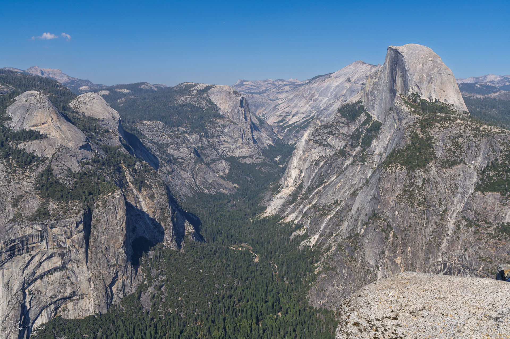
There is s hiking trail that takes you to the other side of the Glacier Point view and you can look down at the Yosemite Valley. Is a pretty cool view, although not as massive as Glacier Point.
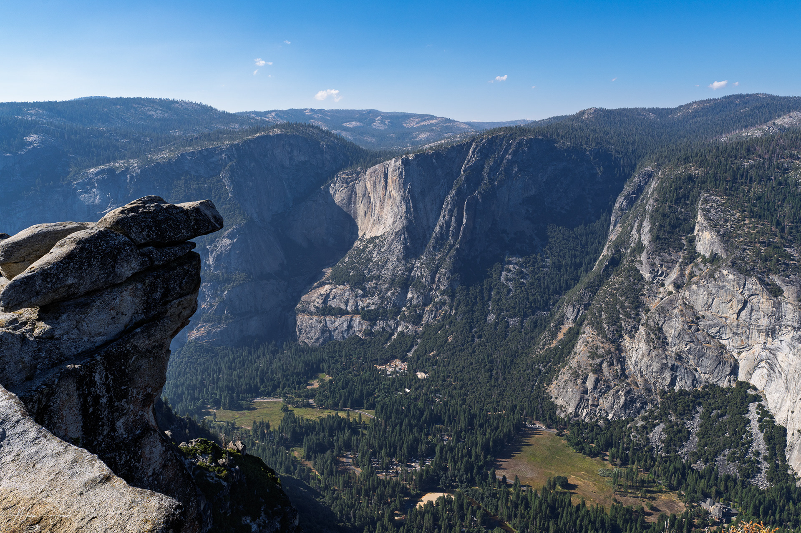
Final tips
Yosemite can be a once in a lifetime experience for some, or a regular event for those fortunate enough to be able to visit regularly. I'm amongst the formers, although I have some trips to the area planned for the next few years, and I do want to visit again. This time I'll do things considerably slower:
- Stay as near to the part as possible so you can enjoy back to back sunrises and sunsets.
- Take your time. Better to spend more time in a specific spot than rushing.
- Walk around the valley, there is a lot to see, and people (me included) tend to just get to what you can reach by car.
- Tuloumne Meadows is worth the trip, but maybe not worth the 3-hour round trip if you are short on time.
- I will avoid Tuolumne Meadows on my next visit, as I prefer to explore the El Capitan meadows and get closer to Half Dome.
GoodBye Yosemite National Park
With tears in my eyes, literally, I said good bye to Yosemite National Park. Until the next time.
It was an overwhelming experience. A dream that came true 40 years later, and one that I will revisit as soon as I'm able, next time being in a much slower pace and more focused on photography rather than visiting all the places as fast as I can.
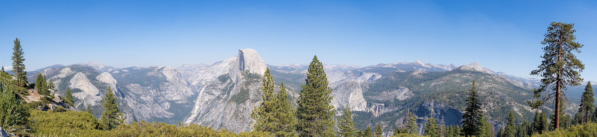